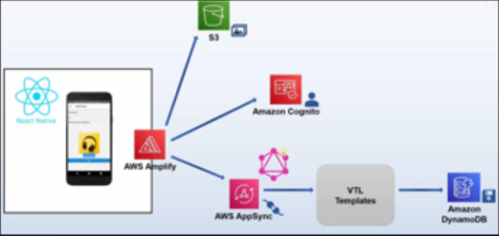

Smart Pantry User Manual and System Manual
Thank you using our Smart Pantry application. In this guide, you will find the User Manual and the System Manual for our application. The User Manual explains how to use the app, and is intended to act as a reference for users who would like to familiarize themselves with a feature of the application. The System Manual shows all the functions used throughout the application, and is intended to act as a reference for programmers who would like to understand how the app works under the hood.
The Smart Pantry app was created by the following students in the LANE department of Electrical Engineering and Computer Science at West Virginia University:
- Shannon Biega
- Kollin Labowski
- Jonathan Malcomb
- Ryan Mraz
- Matthew Winston
To view the System Manual, select the "Source" tab at the top left of the screen.
Vision Statement
A CSEE 481 effort to assist elders in tracking their food pantry items and living more independently while decreasing food waste and malnutrition among elders.
Current Status of the Project
| Requirement Number | Requirement Description | Completion Status | Is it demonstratable? | Comment |
|---|---|---|---|---|
| 1 | Create Account | Yes | Yes | A user can successfully create an account with their chosen credentials and can access account information |
| 2 | Login | Yes | Yes | A user can login to the Smart Pantry application |
| 3 | Create Pantry | Yes | Yes | A user can to create a pantry |
| 4 | View Pantry | Yes | Yes | A user can view the contents of the pantry |
| 5 | Barcode Add Item | Yes | Yes | A user can add a food item to their pantry via scanning the barcode of the item |
| 6 | Manual Add Item | Yes | Yes | A user can add a food item to their pantry by manually inputting the information |
| 7 | Update Item | Yes | Yes | A user can modify the name/quantity/weight of a food item |
| 8 | Remove Item | Yes | Yes | A user can remove an item from the pantry |
| 9 | Notifications | Yes | Yes | A user has a notification displayed when a food item's quantity/weight is low or if it is expiring soon |
Architecture Diagram
The architecture used is based off of AWS Amplify. React Native is the JavaScript library used to develop for both Android and iOS devices, AWS S3 provides a storage solution, AWS Cognito provides authentication for the app, and AWS AppSync creates a GraphQL endpoint to interact with AWS DynamoDB as the backend database.

Reflections and Intructions for Future Developers
One unexpected obstacle for connecting the scale to the Smart Pantry Application was the lack of a Bluetooth API in Expo. When adding or updating an item in the database, the user has the option to weigh/reweigh the item, which we expected to work by having the scale connect to an Arduino, then to an ESP32, and then to the app. However, because Expo (the platform we used to make our app to be cross-platform) doesn’t have a Bluetooth API, this was a lot more complicated than expected.
Because of this, we decided to communicate with the database directly through Wi-Fi and autofill the “weight” field in the app from the added weight in the database. If Expo includes a Bluetooth API in the future, it would be a good idea to have the scale autofill the “weight” field from the ESP32 (or similar Bluetooth communicator), wait for user confirmation, and then add/update the weight.
If migrated from Wi-Fi to Bluetooth, significant change to the development environment would have to be made, which may conflict with other features (Notifications, etc.).
Directory of the Project Archive
Group 3’s Smart Pantry Application is housed on GitHub at the following link:
User Interface
Sign In Page
This is the page the user will be sent to when they first open the app. If they have previously created an account, they may enter their username and password in the appropriate input fields, and click the SIGN IN button to log in to their account. If a user has created an account but cannot remember their password, they may click the Forgot Password button to be navigated to a new screen to reset their password. If the user has not yet created an account, they may select the Sign Up button to be navigated to another new screen which will allow them to create a new account.

Create Account Page
This is the page the user is sent to if they select the Sign Up option from the Sign In Page. They will be able to enter a new username, password, email address, and phone number in the appropriate fields. When all 4 fields have been filled in by the user, they may select the SIGN UP button to navigate to a screen which will allow them to confirm their email address. The user may alternatively select the Confirm a Code option to be directed automatically to the same screen as the SIGN UP button, however it will not send a code upon being clicked. The user may also return to the Sign In Page by selecting the Sign In button in the bottom right corner.

Confirm Email Page
This is the page where a user may confirm their email address by entering a special code which was sent to their email. To confirm the code, they must enter their username and their received confirmation code in the appropriate input fields. The user may then select Confirm to confirm their information and be redirecting to the Sign In Page. The user may also choose to have the code resent by clicking Resend Code, or to navigate back to sign in without creating a new account by selecting Back to Sign In.

Landing Page
This is what the user will see when they first sign in to their account. To navigate to different parts of the app, the user may select the menu in the top left corner of the page. This will bring up a drawer with options for navigation.

Navigation Drawer
The drawer includes links to some of the different pages on the app. The user may choose to navigate to the landing page at any time by selecting the Welcome option. The user may also choose to view their pantry by selecting the My Pantry option. The user can view their shopping list by selecting the Shopping List option. The user will be navigated to their profile screen using the My Profile option. The help screen can be visited by clicking the Help option. The settings menu can be accessed by selecting the Settings menu. Finally, the user may choose to sign out of their account by selecting the Sign Out option.

Create Pantry Page
This screen is shown to the user before they have created a pantry. It is a button labeled Create Pantry which the user may click to be navigated to the Name Pantry Page.

Name Pantry Page
This page allows the user to enter a name for their pantry in an input field, and then select the Submit button to navigate to the View Pantry Page.

View Pantry Page
The first time the user navigates to this page, it will look like the below image. The user will see the name of their pantry displayed, and they will have the option to add an item to their pantry by selecting Add Item. This will navigate the user to the Add Item Page.

After adding items to the pantry, each item will be displayed on this page with their name, as well as their weight, quantity, and/or expiration date if the user filled in any of those optional fields. The user will also have the option to update an item with the update button, or delete it from their pantry using the delete option.

Add Item Page
On this page, the user will have the option to add an item to their pantry by specifying a name and optionally a weight, quantity, and/or expiration date in their respective fields. The user may also choose to navigate to the Barcode Add Page by selecting the Barcode Add button, or they may choose to add their input information to their pantry using the Submit button.

Barcode Add Page
On this page, the user's camera is opened up, and the user may scan the barcode of a food item they have. The information from the barcode scan will be used to create a new item in the user's pantry.

Update Item Page
This is a page the user may use to change some of the fields of an item in their pantry. Specifically, the user may change the name, weight, or quantity of an item they have selected. They may commit these changes by using the Submit button, or they may rollback the changes using the Go back button.

Delete Item Page
When the user attempts to delete an item, a pop-up will appear confirming whether the user would actually like to delete the item or not. If the user selects YES, the user will then be asked whether they would like to add the item to their shopping list (not pictured).

Shopping List Page
This page will display the name of all items in the user's shopping list, and will give the user the option to delete the items by selecting the Delete Item button. If the user selects this button, they will receive a pop-up identical to the Delete Item Page. The user may also select the Add Item button to add new items to their shopping list on the Shopping List Add Page. Note that this page will only display if the user has created a pantry.

Shopping List Add Page
On this page the user will be able to add a new item to their shopping list by typing in a name for their item in the appropriate input field shown below. The user may then add that item to their list using the Submit button. The user may also return to the Shopping List Page using the arrow in the top left corner.

Profile Page
On this page, the user can view their profile, which displays their email address and their phone number as they input when they created their account.

Help Page
This page will allow the user to learn about how to use their Smart Pantry app.

Settings Page
This page will allow the user to navigate to the various settings pages for the application. The user may visit the Profile Page by clicking the My Information button. The user may navigate to the Manage Pantry Page by selecting Manage My Pantry. The user can visit the Collaborator Pantry Page by selecting Collaborator Pantry. The user can visit the Notifications Page if they select Notifications. The user may select Help to visit the Help Page. The user can visit the About Page by selecting About. The user can visit the Credits Page by selecting Meet The App Developers. Finally, the user may access the Sign Out Page by selecting Sign Out.

Manage Pantry Page
This page will allow the user to view information about their pantry and change some of its settings.

In this page, the user may add a collaborator to their pantry by adding the user's email address appropriate input field. The user may also choose to delete their pantry by selecting the Delete Pantry button.

Collaborator Pantry Page
Here the user can view a pantry which they have been added to as a collaborator. They cannot make any modifications to the pantry, however they may choose to add an item to their shopping list using the ADD TO SHOPPING LIST button.

Notifications Page
This page will allow the user to change the frequency of notifications they will recieve. The user may select any of the buttons which shows their preferred frequency and it will update it for their pantry. The user may also test their notifications by selecting CLICK HERE TO TEST NOTIFICATIONS.

About Page
This page displays information about the Smart Pantry app to the user.

Credits Page
This page displays information about the creators of the application.

Sign Out Page
This page features a pop-up to confirm whether the user would like to sign out of their account. If they select YES, they will be navigated to the Sign In Page.

Setup Manual
User's Guide
To use our application, you need to navigate to your App Store and download “Smart Pantry – Group 3”. You can find our application on both the Google Play Store and Apple’s App Store. After you have downloaded the application, please unbox your Smart Pantry Weight Sensor and place it in a location you wish while also being in a good range for your Wi-Fi router. Please connect it to Wi-Fi for it to work.
After setting up your Smart Pantry Weight Sensor and connecting it to Wi-Fi, please open the downloaded Smart Pantry Application. You should be greeted with this screen...
You must first create an account, please create an account with a secure password that is at least 16 characters long! After you are done with your account creation, you will be sent an email to the email address that is attached to your account... you must use that verification code to complete the creation process. Once you have done that you can then login with your new account! After you login in you should be greeted with this screen...

You should now be all set up! Just tap the 3-line menu (hamburger menu) in the top left and navigate to ‘My Pantry’ in the menu that comes out.
Programmer's Guide
To begin, you must navigate to https://github.com/Voomkin/SmartPantry/releases and download the most recent release. You can alternatively git clone https://github.com/Voomkin/SmartPantry in order to obtain the most updated codebase but be warned there might be unsquashed bugs.
After performing either of the above, navigate to the directory where the project is located and run the following commands to gather the necessary dependencies.
npm install
amplify init
You must provide your AWS credentials during the Amplify Initialization process. If you do not already have Android Studio (or XCode if you are on MacOS), you should install your respective emulation software and follow these instructions to set up your emulator.
Android: https://developer.android.com/studio/run/emulator
iOS: https://docs.experitest.com/display/TC/AS+-+Connecting+An+iOS+Emulator
If you wish to develop within the weight module, you must unbox your Smart Pantry Weight Sensor and download the Arduino IDE (https://www.arduino.cc/en/software) to begin development
User Manual
Create Account
Creating an account is the first step you will want to take upon downloading your Smart Pantry app. Creating an account will allow you to access all of the Smart Pantry's features, including creating and accessing your pantry. Once you have downloaded the app, you should see a screen that looks like the below screenshot:

Notice the Sign Up button in the lower right of the screen (pictured above). Click this button to navigate to a new page that looks like the image below. On this screen, enter a username, password, email address, and a phone number. There are a few things to note here. First, the chosen username must be in the form of an email address (see example in the picture). It is recommended that you use the same email for your username and email address. For you password, we recommend using at least 12 characters, and a mixture of upper/lower case letters, numbers, and symbols (although this is not enforced). Ensure that the phone number you enter is a valid phone number (must be 10 characters long). When you are satisfied with the information you have entered, click the confirm button (pictured below).

Now that you have entered your new login information, you should receive a confirmation code at the email address you have specified. If you do not receive a confirmation code within about a minute, you can send another one by clicking Resend code in the bottom left of the screen. An example code is shown in the image below. You should enter your username again and enter your confirmation code, and click the Confirm button when you are done.

If you have followed all of the steps, your new account will be created and you will be redirected to the Sign in page.
Login
Once you have created an account, you are ready to log in and start to explore your Smart Pantry. If you have not logged in yet, you should be greeted by a sign in page once you log in that looks like the image below. Simply enter the username and password you used when you created your account, and click the SIGN IN button.

If your login was successful, you should be directed to a page that looks like this:

If you login was unsuccessful, consider resetting your password by selecting the Forgot Password button in the lower left of the first image in this section. You will be directed to a page that looks like the image below, and you will be prompted to enter your email. Check your email afterwards for a message about resetting your password.

Sign Out
If at any point while using the app you wish to sign out, you can first click the icon in the top left of the screen to bring up a drawer:

Once you have brought up the drawer, you can select the Sign Out option at the bottom:

A pop-up menu should appear asking for your confirmation. Selecting yes will sign you out of your account, returning you to the Sign In screen.

Navigating the App
Navigating the app is done by using a drawer which is brought up by using an icon in the top left of the screen:
Selecting this icon will bring up several options as shown in the next image. More info on each of these options will be explored later in this manual.

Create Pantry
When you first create an account, the first thing you will probably want to do is make a pantry. Making a pantry allows you to add items and keep track of them, but it also gives you access to other features, such as the Shopping List and Notifications. In order to create a pantry, first open up the drawer in the top left corner (see Navigating the App). Select the option which reads My Pantry:

This will bring you to a page that looks like the following image (if you haven't already created a pantry). Select the Create Pantry button to create your pantry.

Next, choose a name for your pantry an type it into the input field that appears. When you have selected a name you are satisfied with, click Submit.

If you see a page that looks like the following image, you have successfully created your pantry!

Manual Add Item
To get the most use out of your pantry, you will want to be able to add items to it. There are 2 different ways to do this with your Smart Pantry app, the first of which is the Manual Item Add. To do this, make sure you are on the My Pantry tab, and click the Add Item button (it should appear below the name of your pantry).
Next, you will be redirected to the Add Item screen. Here, you can enter various information about the food item you are adding. You are required to enter a name for your item, but you may also optionally choose to add a weight (in pounds), a quantity, and/or an expiration date for you item. The 3 optional fields are used by the app to determine when you should receive notifications. When you are satisfied with the information you have entered for your item, click Submit.

You should be redirected to back to your My Pantry screen. Notice that the item you have added is now displayed under the name of your pantry, along with any additional information you have input for it.

Barcode Add Item
An alternative method of adding an item to your database is known as the Barcode Add function. You can do this by navigating to your My Pantry screen and selecting the Add Item button, just as with the Manual Add method.
This time, instead of filling in any of the above fields, click Barcode Add.

This will open up your camera as shown below. Find the barcode on the food item you wish to add to your pantry, and scan it by pointing your camera at it so that the barcode is upright.

The barcode should scan automatically once it has been detected by the camera. In the event that the barcode is not recognized, you will be prompted to manually add (see previous section), however, if the scan was successful, you will be navigated to a new screen with the name of your item automatically populated:

You may optionally enter either a weight or a quantity. When you are satisfied with the options you have selected, click the Submit button to be sent back to the Add Item screen. From here simply click the back arrow in the top left corner to return to your My Pantry page and see your newly populated item.

Update Item
When viewing the items in your database, you may notice the update button next to the information for each item. To update an item, simply click the update button which is located next to the specific item you would like to update. For this example, we will update the "Apples" item.
Clicking the update button for an item will bring up a screen where you can input new fields for your item. You may update the name, weight, or quantity of your item (fields left blank will stay the same). Notably, you cannot update the expiration date of your item, so if you make a mistake typing in your item's expiration date, you will have to delete the item and add it again (see the next section on deleting items). Here we change the "Apples" item to "Bananas" with a new quantity of 4.

When you are satisfied with the changes you have made, click Submit. This will return you to the My Pantry screen. Note that the item has been updated with the fields you have entered.

Using the Scale
Implementation of this feature is nearing completion. This section will be updated when this feature is finished.
Delete Item
Next to the update button for each item in the pantry is a delete button. To delete an item from your pantry, click the delete button which is next to the item you would like to delete. In this example, we want to delete the "Bananas" item from our pantry.
When you click the delete button to an item, you will see the following pop-up message:

Answering YES to the question will remove the item from your pantry, but it will also pull up another pop-up as follows:

Answering YES to this question will add the deleted item to your shopping list, which is a feature of your Smart Pantry app which is discussed later in this manual.
Delete Pantry
While working with your Smart Pantry app, you may decide that you would like to delete your entire pantry. NOTE: Before you do this, be aware that deleting your pantry will delete all items in your pantry, AND all items in your Shopping List. It is also important to note that you will not receive any notifications if you do not have a pantry. If you are okay with this consequences, open the drawer menu from the icon in the top left corner of the screen:
Click on the Settings button that appears in this drawer:
Next, click on the Manage My Pantry option in the Settings menu.

Now scroll to the bottom of this new page. It should look like the following picture:

Click the button labeled Delete Pantry, and you should receive a pop-up that looks the the picture below. Select YES to delete your pantry. You should receive a confirmation message saying that your pantry was deleted.

Notifications
Notifications are one of the main features of your Smart Pantry, and they are designed to happen seamlessly. First of all, you must have a pantry before you can start to receive notifications (see the section about creating a pantry). Secondly, you will only get notifications in the event that at least one of your items is expiring soon (~ within 15 days) and/or one of your items is running low (the weight or the quantity of the item falls below 30% of its original weight/quantity at creation). A notification will output a summary of the amount of items expiring soon and the amount of items running low. Click on a notification to open up the Smart Pantry app, then check your My Pantry page for more information. An example of a notification received in a pantry with 1 item running low can be seen in this picture:

You can also change the frequency at which you receive notifications. The frequency is the minimum time between notifications being sent, so having a notification frequency of 1 day means that you will get a notification roughly once a day, depending on how often you open the Smart Pantry app. When you create a pantry, the default notification frequency is 1 day, however you can change this. To change your frequency, open the drawer for the app by clicking the logo in the top left of the app.
Click on the Settings option from this pop-out drawer menu. This will direct you to the Settings page:
From this page, select the Notifications option. This will take you to a screen that looks like this:

From here, click the button with the notification frequency you would like to switch to. Selecting an option will cause a pop-up to appear, confirming your decision. Additionally, if you would like to test push notifications, there is a button to do that on this page as well. Clicking that button will cause a notification to appear in a few moments as long as you have enabled notifications permissions for the application.
Shopping List
The Shopping List is a feature intended to be used for keeping track of items the user would like to purchase the next time they visit the store. In practice, it acts as a simpler form of the pantry. To get to the shopping list, open the drawer menu by clicking the logo in the top left corner:
Select the Shopping List option from this menu. You should arrive at a screen that looks like the following:

From here, you can add an item to your shopping list by selecting the Add Item button. This will take you to a page that looks like the below image.

Here you can fill in the name of the item you would like to add to your shopping list. Click Submit after entering the name to add it to your list. You can continue to add as many items to your list as you would like. To return from this menu, click the back arrow in the top left. This will take you back to your Shopping List. Notice the delete option next to each item on your shopping list. Just as with the pantry (see the section of deleting items from a pantry), you can delete an item from your shopping list by selecting the delete button which is next to the item in the display. A pop-up will appear asking you to confirm whether you would like to delete you item. Select YES to delete the item from your list.
Add Collaborators
A unique feature of the Smart Pantry app is the ability to allow other users to view your pantry. In order to add a collaborator to your account, first open the drawer using the logo in the top left corner:
Next, click on the Settings option from this menu.
In the Settings menu, select Manage My Pantry from the list of options.
Once you have reached the Manage Pantry screen, scroll to the bottom of the screen. You should see something similar to the following image:
To add a collaborator to your pantry, type in the email address of the user you would like to add to your pantry in the space where it reads "Enter Collaborator Email". Note that this email does not necessarily need to belong to a currently existing account, however the user with the email you enter will need to create an account before they can see your pantry. Select Add Collaborator to Pantry to add the collaborator to your pantry. You will see a pop-up asking you to confirm your decision. Select YES to add the collaborator. You will also be asked whether you would like to email the user to notify them that you added them as a collaborator. If you respond with YES, your primary email app will open, and an email will be automatically generated, which you may choose to change, or just push send to send the email straight to whoever you wish to add as a collaborator.
View Collaborator Pantries
If you have been added as a collaborator on another user's pantry, you can view their pantry by first opening the drawer by clicking on the logo in the top left corner of the screen:
Next, select the Settings option from the list in the drawer menu.
Then, select the Collaborator Pantry option from the Settings menu.
If you have not been added as a collaborator on another pantry, you will see a message notifying you of this. Otherwise, you will be able to see the contents of the user's pantry, as well as buttons which allow you to add items in the other user's pantry directly to your shopping list (see the section about shopping lists). Note that you cannot actually make any changes to the other user's pantry, only view their items and add items to your shopping list. (Selecting the Add to Shopping List button next to an item will cause a pop-up to confirm that you actually want to do that. Select YES to add the item to your list).

Settings
The Settings section is where several different configuration options and other app information can be found. To get to this section, first open the drawer menu from the logo at the top left of the screen:
Next, click the Settings option that appears on the drawer:
You will then see the Settings screen. From here you can access several different pages of the app which perform different features.
The first of these features is the My Information page, which can alternatively be navigated to by selecting the My Profile option in the pop-up drawer. This page displays information about the user, including the email and phone number they used to create their account.

The next page in the Settings section is the Manage My Pantry section. This page displays information about the user's pantry, and is also where the user can add a collaborator to their pantry (see the section on adding collaborators), or delete their pantry (see the section on deleting a pantry).

The next page is the Collaborator Pantry section. See the section on viewing collaborator pantries for more information.
The next page is the Help page. This page is used to explain how to perform various app functions in a step-by-step format.

The next page is the About page. This page displays information about the app, including its purpose and goals.

The next page is the Meet the App Developers page. This page shows the credits of the app, with information about each of its 5 developers.

Finally, there is a Sign Out option. See the section on signing out for more information.
Architecture Diagrams
Development Environment
The architecture used is based off of AWS Amplify. React Native is the JavaScript library used to develop for both Android and iOS devices, AWS S3 provides a storage solution, AWS Cognito provides authentication for the app, and AWS AppSync creates a GraphQL endpoint to interact with AWS DynamoDB as the backend database.

Database Design
With the use of DynamoDB we created three tables to hold our data, with relationships shown between each table. One-to-One relationship between an Item and a Pantry and a one-to-one relationship between a ShoppingList and a Pantry. We used GraphQL in order to manipulate or extract data from our database. With the above relations, we were able to easily relate any individual entry in the database itself. Our intent with the design was to allow us to clearly relate Items to Pantrys, and ShoppingLists to Pantrys and thus Items. It made sense to have everything related to a Pantry as that acted as the central repository for all Items that were added by a User.

Hardware Diagrams
The circuit connects the Scale (shown by the small circuit to the left) with the Arduino Mega 2560, which sends data to the ESP32 DEVKIT V1 to send to the database through Wi-Fi. The Scale connects to the Arduino’s 3.3 V, the D2 pin, the D4 pin, and GND. The ESP32’connects to the Arduino through the ESP32’s RX2 and TX2 pins, which connect to the board’s RX0 and TX0 pins, respectively. The ESP32 also connects to the Arduino’s GND.

Note About Final System Design Documentation
This documentation includes information about all functions in the project. This information can be found using the Reference and Source tabs at the top left of this web page. The functions in each file are listed out, and the full source code can be found as well.
NOTE: Several features used throughout the project were imported from various creators and changed for use in the app. Imported features include:
- Notifications, which are done through Expo
- The navigation drawer, which is imported from React
- The mutations.json and queries.json files used for accessing/mutating the database were autogenerated via Amplify from AppSync (AWS)
- Barcode scanning features were imported from React
- Recognizing barcodes was done using the Edamam API
- The database is stored on AWS DynamoDB
- Verifying credentials is done using AWS Cognito
- Development of the app was done using the Expo Go app
The code for App.js and the JavaScript files in the screens folder was all coded by our group, although most of them include a few elements imported from React and React Native for support of app development, such as buttons, inputs, Screen stacks, etc. For full information, view the code as mentioned at the begining of this section. Imports for each file are stored at the top, and most of the imports come from React, Expo, and AWS Amplify.
Documentation of Testing
Create Account / Login
- On the “Sign in to your account” screen, click “Sign Up”
- This will open a screen with “Create a new account” at the top, with four text fields.
Fill in the:
- “Username” field with a valid email address
- “Password” field with a password
- “Email” field with a valid email address
- “Phone Number” with a valid phone number
Click “Sign Up”
- This will open a screen with “Confirm Sign Up” at the top, with two text fields. This will also send a confirmation code to the email address previously provided.
- Fill in the:
- “Username” field with the email address previously provided
- “Confirmation Code” field with the confirmation code received via email
- Click “Confirm”
This will open a screen with “Sign in to your account” at the top, with two text fields.
Fill in the:
- “Username” field with the email address previously provided
- “Password” field with the matching password to the email in the “Username” field
Click “Sign In”
- This will open a screen with “Welcome” at the top
Click the three horizontal lines in the top left corner of the screen
- A sidebar will open on the left of the screen with the following options: Welcome, My Pantry, Shopping List, My Profile, Help, Settings -The username used to log in will show above the sidebar options
Create Pantry
- On the “Welcome” screen, click the three horizontal lines on the top left of the screen
- A sidebar will open on the left of the screen with the following options: Welcome, My Pantry, Shopping List, My Profile, Help, Settings
- Click the “My Pantry” option
This will open a screen with “My Pantry” at the top, with one button in the middle of the screen with “Create Pantry” on it.
Click the “Create Pantry button”
- This will open a screen with “Create Pantry” at the top, underneath the parent screen “My Pantry”, with one text field in the middle of the screen and a button underneath with “Submit” on it.
Click the text field and enter a name for the pantry
- Click the “Submit” button
- This will return to the “My Pantry” screen, but will have the provided name of the pantry in the middle of the screen, with a button underneath with “Add Item” on it
Manual Add Item / View Pantry
On the “My Pantry” screen, after a pantry is created, click the “Add Item” button
- This will open a child screen called “Add Item” with four text boxes and two buttons with “Barcode Add” and “Submit", respectively
Fill in the:
- “Name” field with “Tomato Soup”
- “Weight” field with 1
- “Quantity” field with 5
- “Expiration date” with the date 30 days away
- Click the “Submit” button
- This will return to the main “My Pantry” screen with the added item shown below the “Add Item” button. The new item will include the item name, the given weight, the given quantity, the given expiration date, an “Update” button, and a “Delete” button
Barcode Add Item
On the “My Pantry” screen, after a pantry is created, click the “Add Item” button -This will open a child screen called “Add Item” with four text boxes and two buttons with “Barcode Add” and “Submit", respectively
Click the “Barcode Add” button
- The phone’s camera will open inside a child screen called “Barcode Add”
Point the camera at the barcode on the wanted item
- This will open a screen with the name of the item above two text fields, a button called “Submit” and a button called “Go Back” underneath
- Clicking “Go Back” will return to the “Add Item” screen. If clicked, follow steps 1-3 to return to the screen with the “Go Back” button
Fill in the:
- “Quantity” as 1
Click the “Submit” button
- This will return to the “Add Item” screen
Click the arrow in the top left of the screen
- This will return to the “My Pantry” screen, and will refresh to include the added item
Update Item
- On the “My Pantry” screen, click the “Update” button next to an item with the values:
- Name: Tomato Soup
- Weight: 1
- Quantity: 5
- This will open a screen with “Edit your item” at the top, with three text fields and two buttons called “Submit” and “Go Back”
- Fill in the:
- “Name” field with “Soup”
- “Quantity” field with 4
- Clicking “Go Back” will return to the “My Pantry” screen. If clicked, follow steps 1-2 to return to the “Edit your item” screen
- Click the “Submit” button
- This will return to the “My Pantry” screen with the changed values shown for the updated item
Remove Item
- On the “My Pantry” screen, click the “Remove” button next to an item with the values:
- Name: Soup
- Weight: 1
- Quantity: 4
- This will open a pop-up called “Delete Item” asking for confirmation to delete
- Clicking “No” will return to the “My Pantry” screen. If clicked, follow step 1 to return to the pop-up
- Click “Yes”
- This will open another pop-up called “Shopping List” asking if the item should be added to the shopping list
Clicking “No” will return to the “My Pantry” screen and delete the item, but not add it to the shopping list. If clicked, follow steps 1-2 to return to the “Shopping List” pop-up
Click “Yes”
- This will return to the “My Pantry” screen with the removed item not shown
Click the three horizontal lines in the top left of the screen
- This will open a sidebar with the following options: Welcome, My Pantry, Shopping List, My Profile, Help, Settings, Create Pantry
- Click “Shopping List”
- This will open the “Shopping List” screen with a button that says “Add Item” in the middle, and the item added to the shopping list with a button with “Delete Item” on it
Notifications
- Make sure the pantry is empty
- On the “My Pantry” screen, click the three horizontal lines in the top left of the screen
- This will open a sidebar with the following options: Welcome, My Pantry, Shopping List, My Profile, Help, Settings, Create Pantry
Click the “Settings” option
- This will open the “Settings” screen, with the options: My Information, Manage My Pantry, Collaborator Pantry, Notifications, Help, About, Meet The App Developers, Sign Out
Click the “Notifications” option
- This will open the “Notifications” screen, with multiple bars with different time increments on them spanning the width of the screen
Click the “10 SECONDS” bar
- This will check to see if notifications need to be sent every 10 seconds
Click the three horizontal lines in the top left of the screen
- This will open a sidebar with the following options: Welcome, My Pantry, Shopping List, My Profile, Help, Settings, Create Pantry
Click the “My Pantry” option
- This will open the “My Pantry” screen, showing all the items that are in the pantry
Click the “Add Item” button
- This will open a child screen called “Add Item” with four text boxes and two buttons with “Barcode Add” and “Submit”, respectively
Fill in the:
- “Name” field with “Tomato Soup”
- “Weight” field with 1
- “Quantity” field with 5
- “Expiration date” with the date 30 days away
Click the “Submit” button
- This will return to the main “My Pantry” screen with the added item shown below the “Add Item” button. The new item will include the item name, the given weight, the given quantity, the given expiration date, an “Update” button, and a “Delete” button
Click the “Add Item” button
- This will open a child screen called “Add Item” with four text boxes and two buttons with “Barcode Add” and “Submit”, respectively
Fill in the:
- “Name” field with “Milk”
- “Weight” field with 1
- “Quantity” field with 1
“Expiration date” with the date 2 days away
Click the “Submit” button
- This will return to the main “My Pantry” screen with the added item shown below the “Add Item” button. The new item will include the item name, the given weight, the given quantity, the given expiration date, an “Update” button, and a “Delete” button
Click the “Update” button next to the item called “Tomato Soup”
Fill in the:
- “Quantity” field with 1
Click the “Submit” button
- This will return to the “My Pantry” screen with the changed values shown for the updated item
Wait for 10 seconds
- A notification will be sent within 10 seconds saying “You have 1 item(s) expiring soon and 1 item(s) running low! Click here to view them.”
Create Account Edge Cases
- On the “Sign in to your account” screen, click “Sign Up”
- This will open a screen with “Create a new account” at the top, with four text fields.
- Fill in the:
- “Username” field with an invalid email address
- “Email” field with an invalid email address
- Click “Sign Up”
- This will open an error saying the required fields need to be filled
- Fill in the:
- “Username” field with a valid email address
- “Password” field with a password
- “Email” field with a valid email address
- “Phone Number” with a valid phone number
- Click “Sign Up”
- This will open a screen with “Confirm Sign Up” at the top, with two text fields. This will also send a confirmation code to the email address previously provided.
- Fill in the:
- “Username” field with the email address previously provided
- “Confirmation Code” field with an invalid confirmation code
- This will open an error saying the confirmation code was incorrect
Login Edge Cases
- On the “Sign in to your account” screen with an account already created, fill in the fields:
- “Username” with an existing username
- “Password” with a mismatching password
- An error message will pop up saying the username or password was incorrect
- Fill in the fields:
- “Username” with a nonexistent username
- “Password” with a valid password
- An error message will pop up saying the username or password was incorrect
Create Pantry Edge Cases
- No characters provided and maximum characters for Pantry name
- Input an exceptionally long string of characters for a Pantry Name: An error message displays, “Your Pantry name must not exceed 20 characters”
- Input no characters for a Pantry Name: An error message displays, “You must provide a name for your Pantry”
Update/Barcode/Manual Item Add Edge Cases
- Input invalid Expiration Date
- Input a date before the current date: An error message is displayed, “Invalid Expiration Date”
- Input invalid Quantity or Weight
- Input a negative quantity or weight: An error message displays, “(Quality/Weight) cannot be negative”
- Input a decimal quantity: An error message displays, “A quantity must be a whole number”
- No characters provided and maximum characters for an Item name
- Input an exceptionally long string of characters for an Item name: An error message should display, “Item name must not exceed 20 characters”
- Input no characters for an Item name: An error message should display, “You must provide an Item name”
- Input an Item that already exists in the Pantry
- Input an Item that already exists in the Pantry: An error message displays, “An Item with that name already exists”
Notifications Edge Cases
- Notification linked to deleted Item does not break application
- Have an Item that is either close to expiring (~6 days from expiration date) or low (~25% of max weight or quantity), when a Notification is triggered. Delete the item first, then click the Notification: Application navigates to the ‘My Pantry’ page. Application does not break.
Shopping List Edge Cases
- No characters provided and maximum characters for Item name
- Input an exceptionally long string of characters for an Item name: An error message should display, “Item name must not exceed 20 characters”
- Input no characters for an Item name: An error message should display, “You must provide an Item name”
Settings Edge Cases
- Invite self as a collaborator on your Pantry
- Navigate to Settings > Manage My Pantry – Scroll to the bottom and invite yourself to join your Pantry as a collaborator: Error message should display, “Cannot invite yourself as a Collaborator”